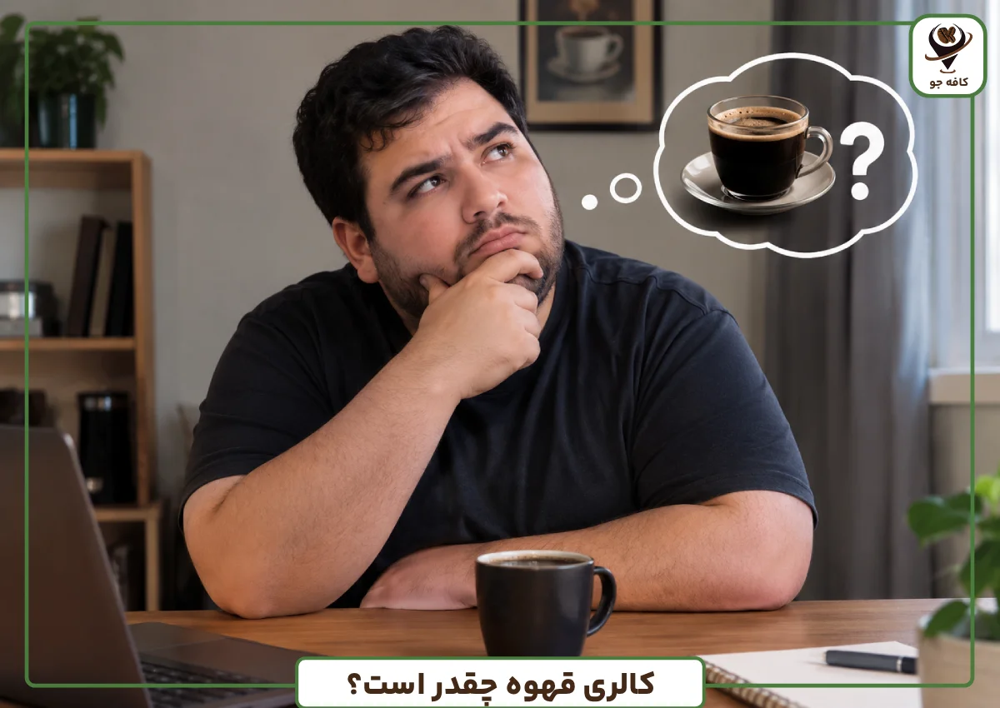

کافه
کافه(به فرانسوی: Café) محلی است عمومی؛ که در آن نوشیدنی غیرالکلی و گاه غذاهای سبک عرضه میشود. کافه در برخی از کشورها جایی برای معاشرت و گفتگوی مردم است. کافه و کافی شاپ در کلمه کاملا شبیه به هم هستند؛ اما نباید کافه را با کافیشاپ اشتباه کرد. کافیشاپ محل عمومی آمریکایی است که در آن معمولاً فقط قهوه عرضه میشود. از سال ۱۳۶۰، کافیشاپها جای چایخانهها را تنگ کرد. در چایخانههای ایران بهجای سرو قهوه، بیشتر چای و انواع غذاهای سنتی ایرانی با موزیک زندهٔ ایرانی ارائه میشود.